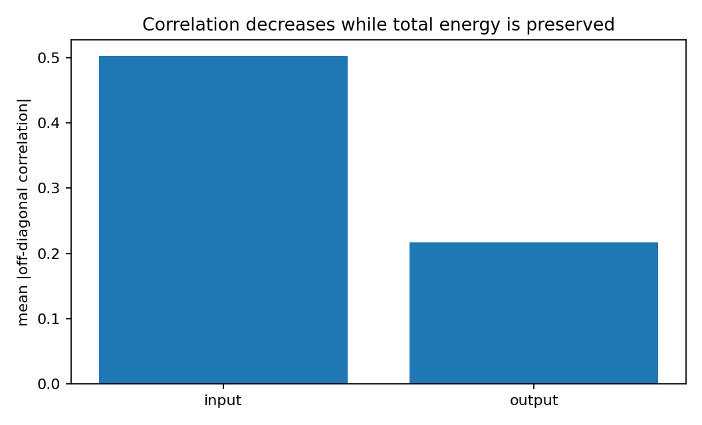
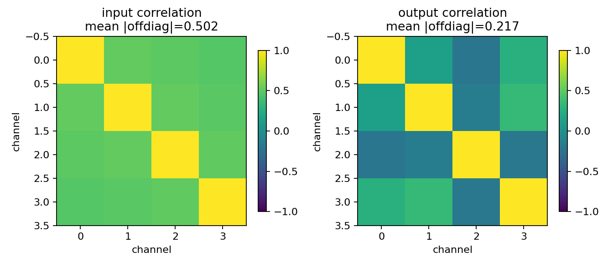
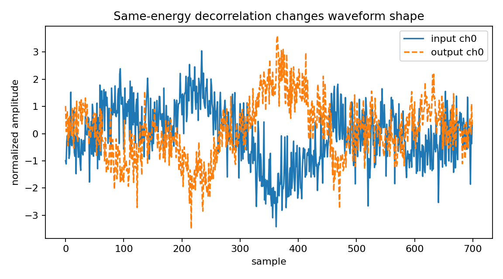

Multichannel audio decorrelation with energy preservation¶
Tutorial goal
Reduce channel correlation while keeping total signal energy roughly unchanged.
Note
New to the terminology? See the lattice DSP concept map and the causality/data-use guide for how online, offline, block, and MIMO examples should be read.
Context¶
Decorrelators are useful for spatial audio and multichannel processing demos. The goal here is not perceptual tuning; it is to show that matrix all-pass/lattice transforms can change correlation structure without changing total power much.
Key idea and equations¶
Let \(x[n]\in\mathbb{R}^c\) be the input block and \(y[n]\) the decorrelated output. The sample covariance matrices are
Decorrelation aims to reduce off-diagonal covariance terms, for example
The transform is chosen to be approximately all-pass/unitary, so total energy should remain nearly unchanged:
The correlation heatmaps show the before/after coupling, while the energy ratio checks that decorrelation did not simply attenuate the signal.
Causality and data use¶
This decorrelator uses the causal OnlineMatrixLatticeAllPass runtime. Each output frame depends only on the current input frame and previous lattice states. The reported finite-block energy ratio can differ slightly from one because short prefixes omit the decaying all-pass tail.
What this example verifies¶
This verifies a causal forward decorrelator. The online all-pass runtime should reduce off-diagonal covariance/correlation while preserving total energy after the filter tail is included. It is a DSP diagnostic, not a perceptual audio product claim.
How to read the result¶
Use the before/after correlation matrices and summary bar plot to see the decorrelation effect; the energy ratio should remain close to one.
Run command¶
python examples/multichannel_audio_decorrelator.py
Run status¶
Return code: 0
Captured stdout¶
channels: 4
order: 5
max reflection singular value: 0.914259
input mean |offdiag corr|: 0.5024
output mean |offdiag corr|: 0.2171
decorrelation factor: 2.31 x
normalized energy ratio: 1.000000
takeaway: causal MIMO all-pass filtering can decorrelate channels without using future samples
Figures¶
{kind=link}

multichannel_audio_decorrelator_corr_summary.png¶
{kind=link}

multichannel_audio_decorrelator_correlation.png¶
{kind=link}

multichannel_audio_decorrelator_waveform.png¶
Source code¶
1"""Streaming multichannel audio decorrelation with a real matrix-lattice all-pass filter.
2
3A real-coefficient matrix lattice all-pass filter can redistribute energy across
4channels and frequency while preserving total power. This example uses the
5causal online runtime, so each output frame depends only on the current input
6frame and previous lattice states.
7"""
8
9from __future__ import annotations
10
11import os
12from pathlib import Path
13
14import numpy as np
15
16from lattice_dsp import MatrixLatticeAllPass, contractive_matrix_from_raw, unitary_polar_factor
17
18
19def _artifact_dir() -> Path:
20 path = Path(os.environ.get("LATTICE_DSP_ARTIFACT_DIR", "reports/example-artifacts"))
21 path.mkdir(parents=True, exist_ok=True)
22 return path
23
24
25def _make_real_filter(rng: np.random.Generator, channels: int, order: int) -> MatrixLatticeAllPass:
26 reflections = [contractive_matrix_from_raw(0.45 * rng.normal(size=(channels, channels))) for _ in range(order)]
27 residue = unitary_polar_factor(rng.normal(size=(channels, channels)))
28 return MatrixLatticeAllPass(reflections, residue=residue)
29
30
31def _apply_real_streaming_filter(x: np.ndarray, filt: MatrixLatticeAllPass) -> np.ndarray:
32 runtime = filt.to_online_filter()
33 y = runtime.process(x)
34 return np.real_if_close(y, tol=1000).real
35
36
37def _mean_abs_off_diagonal_correlation(x: np.ndarray) -> float:
38 corr = np.corrcoef(x, rowvar=False)
39 upper = corr[np.triu_indices_from(corr, k=1)]
40 return float(np.mean(np.abs(upper)))
41
42
43def _save_figures(x: np.ndarray, y: np.ndarray, input_corr: float, output_corr: float) -> None:
44 try:
45 import matplotlib.pyplot as plt
46 except ImportError: # pragma: no cover - optional plotting dependency
47 print("matplotlib is not installed; skipped figures")
48 return
49
50 out_dir = _artifact_dir()
51 corr_x = np.corrcoef(x, rowvar=False)
52 corr_y = np.corrcoef(y, rowvar=False)
53
54 fig, axes = plt.subplots(1, 2, figsize=(8.4, 3.6))
55 for ax, title, corr in (
56 (axes[0], f"input correlation\nmean |offdiag|={input_corr:.3f}", corr_x),
57 (axes[1], f"output correlation\nmean |offdiag|={output_corr:.3f}", corr_y),
58 ):
59 im = ax.imshow(corr, vmin=-1.0, vmax=1.0)
60 ax.set_title(title)
61 ax.set_xlabel("channel")
62 ax.set_ylabel("channel")
63 fig.colorbar(im, ax=ax, shrink=0.78)
64 fig.tight_layout()
65 path = out_dir / "multichannel_audio_decorrelator_correlation.png"
66 fig.savefig(path, dpi=160)
67 plt.close(fig)
68 print(f"wrote {path}")
69
70 segment = slice(0, 700)
71 fig, ax = plt.subplots(figsize=(7.2, 4.0))
72 ax.plot(x[segment, 0], label="input ch0")
73 ax.plot(y[segment, 0], linestyle="--", label="output ch0")
74 ax.set_xlabel("sample")
75 ax.set_ylabel("normalized amplitude")
76 ax.set_title("Same-energy decorrelation changes waveform shape")
77 ax.legend(loc="best")
78 fig.tight_layout()
79 path = out_dir / "multichannel_audio_decorrelator_waveform.png"
80 fig.savefig(path, dpi=160)
81 plt.close(fig)
82 print(f"wrote {path}")
83
84 fig, ax = plt.subplots(figsize=(6.6, 4.0))
85 ax.bar(["input", "output"], [input_corr, output_corr])
86 ax.set_ylabel("mean |off-diagonal correlation|")
87 ax.set_title("Correlation decreases while total energy is preserved")
88 fig.tight_layout()
89 path = out_dir / "multichannel_audio_decorrelator_corr_summary.png"
90 fig.savefig(path, dpi=160)
91 plt.close(fig)
92 print(f"wrote {path}")
93
94
95rng = np.random.default_rng(4)
96channels = 4
97order = 5
98n_samples = 8192
99
100# A smooth shared source creates highly correlated channels. Small delays and
101# independent noise make it more realistic than exact copies.
102white = rng.normal(size=n_samples + 128)
103source = np.convolve(white, np.ones(64) / 64.0, mode="valid")[:n_samples]
104input_channels = []
105for ch in range(channels):
106 delayed = np.roll(source, 3 * ch)
107 input_channels.append(0.9 * delayed + 0.1 * rng.normal(size=n_samples))
108x = np.stack(input_channels, axis=1)
109x = (x - x.mean(axis=0)) / x.std(axis=0)
110
111filt = _make_real_filter(rng, channels, order)
112y = _apply_real_streaming_filter(x, filt)
113y = (y - y.mean(axis=0)) / y.std(axis=0)
114
115input_corr = _mean_abs_off_diagonal_correlation(x)
116output_corr = _mean_abs_off_diagonal_correlation(y)
117energy_ratio = float(np.sum(y * y) / np.sum(x * x))
118
119print("channels:", channels)
120print("order:", order)
121print("max reflection singular value:", round(filt.max_reflection_singular_value(), 6))
122print("input mean |offdiag corr|:", round(input_corr, 4))
123print("output mean |offdiag corr|:", round(output_corr, 4))
124print("decorrelation factor:", round(input_corr / output_corr, 2), "x")
125print("normalized energy ratio:", f"{energy_ratio:.6f}")
126print("takeaway: causal MIMO all-pass filtering can decorrelate channels without using future samples")
127
128_save_figures(x, y, input_corr, output_corr)